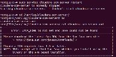
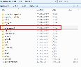
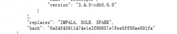
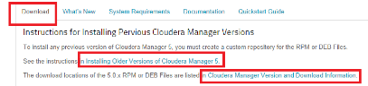
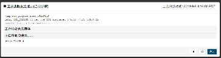
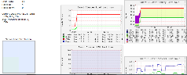
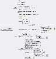
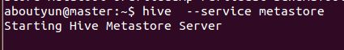

- Server5启动后又挂掉的原因总结
- cloudera CDH（5）开发方式及CDH eclipse插件编译总结
- 5 和 CDH5 本地（离线）安装指南
- Manager5及CDH5安装指导（终极在线安装）
- Manager5在线安装停止在获取安装锁、不能选择安装主机等经验总结
- hadoop、openstack web编程必读: 什么是REST----RESTful架构起源及讲解
- CentOS下安装与配置Ganglia监控Hadoop集群及HBase
- openstack学习线路经验总结: 创建虚拟机50个步骤和100个知识点（2）
- 京东技术开放日第三期
- about云分析discuz论坛apache日志hadoop大数据项目: hive与hbase是如何整合使用的-项目区-about云开发
- ▪ 卸载 Cloudera Manager 5.1.x.和 相关软件【官网翻译: 高可用】
- ▪ 和 CDH5 本地（离线）安装指导
- ▪ Hadoop新成员Hadoop-Cloudera公司将Spark加入Hadoop
- ▪ 学习Cloudera Hadoop 4系列实战课程资料
- ▪ Manager、CDH零基础入门、线路指导
- ▪ 大数据云技术web编程基础: 使用REST API的方式
- ▪ 《OpenStack Juno版》资源分享
- ▪ Spark通过IntelliJ IDEA远程调试
- ▪ Apache、CDH和Cloudera三者有什么区别？
- ▪ Cloudera安装下载CDH失败, 该如何解决
- ▪ Manager5 在线bin安装遇到 无法检测到 Agent 发出的检测信号 总结
- ▪ CDH（Cloudera）与hadoop（apache）对比
- ▪ service cloudera-scm-agent一直起不来, 最后发现hostname及hosts配置不匹配
- ▪ 更换ip后, cloudera-scm-agent无法启动解决经验
- ▪ 解析Cloudera Manager内部结构、功能包括配置文件、目录位置等
- ▪ 使用 cloudera-manager-installer.bin(Parcles)安装失败后卸载cloudera
- ▪ 卸载 Cloudera Manager 5.1.x.及相关软件适用于Red Hat、SLES、Debian/Ubuntu系统
- ▪ cloudera-manager-installer.bin : 怎么安装CDH
- ▪ 通过cloudera-manager来安装hadoop
- ▪ 除下Impala支撑部分, 一切都将迁移至Spark
- ▪ Cloudera重建Hadoop机器学习: Apache Mahout被认为“走到了发展道路的尽头
- ▪ cloudera hue安装及Oozie的安装
- ▪ 大数据架构师基础: hadoop家族, Cloudera产品系列等各种技术
- ▪ Hue 使用经验分享, 遇到的问题及解决方案